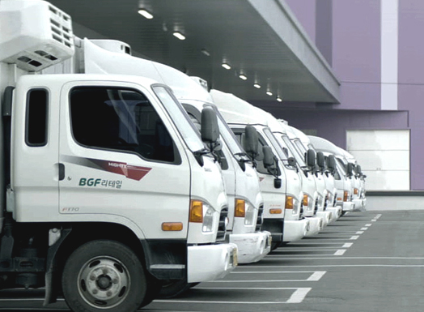

HOME > 서비스 안내 > BGF로지스 소개
BGF로지스 소개
BGFlogis 회사소개
BGF로지스는 최상의 서비스를 통해 고객만족 경험을 최우선으로 합니다.
전국 통합물류센터를 통해 백령도, 울릉도까지 안정적인 물류 공급을 지원합니다. 지역 중심의 물류 거점지로서의 역할을 수행합니다. 공급상품 특성에 따라 최적의 입지 선정으로 전국납품률 평균 99.9%를 달성하고 있습니다.
- 운수transportation
- 물류창고warehouse
- 편의점convenience store
- 무역Trade
주요활동
BGF로지스는 업계 최대규모의 중앙허브 물류센터를 중심으로 전국 21개 물류센터를 운영하고 있습니다.


- 
left
right
-
- Delivery 99.9%
- 전국 납품률 99.9% 달성
-
- automatic
- CVS 물류업계 최초
자동화시스템
-
- logistics
- 백령도 울릉도까지
전국 네트워크 유통망
-
- warehouse
- 국내 최초 편의점 전용
물류센터 가동
물류사업
BGF로지스의 물류사업을 소개합니다.
전국적인 물류 네트워크 거점망을 통해 1년 365일 전국의 모든 CU편의점에 최상의 상품과 서비스를 제공함으로써
업계최고의 고도화된 물류서비스를 실현하고 업계최초 녹색물류인증을 통해 환경친화 물류에도 기여하고 있습니다.
cvs물류사업


BGF로지스의 전국 물류거점 및 수배송 인프라를 활용한 효율적 납품대행과 전문적인 물류서비스를 통해, 공산품(잡화,주류, 담배 등) 집하 및 배송과 전국 800여대 차량배송관리로 상온 상품 물류 공급 등 최적의 물류비와 서비스를 고객사에 제공하고 있습니다.
화물운송사업

다양한 차종의 최적화된 표준화 물류차량을 도입함으로써 CVS 물류사업 지원을 통해 전국 CVS 물류센터의 상온·저온 점포 물류배송은 물론 맞춤형 물류서비스 설계를 통해 전국 CVS 물류센터로 납품하는 협력사의 납품대행 서비스를 제공하는 등 운송사업의 영역을 넓혀 나가고 있습니다.